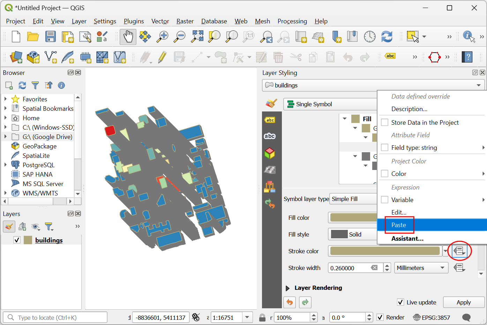

Ujaval Gandhi
Ujaval GandhiIsometrische gebouwen maken (QGIS3)¶
Bijgedragen door: Steven Kim
OpenStreetMap (OSM) is a crowd-sourced global dataset of roads, boundaries, buildings and more. It has a growing collection of building footprints across the world with many of them also having height information. While the accuracy of building height data is notoriously difficult to validate for analysis, we can use QGIS expressions to create a fun artistic isometric rendering from this data.
Overzicht van de taak¶
We zullen afdrukken van gebouwen downloaden vanuit OSM voor het centrum van Toronto en een isometrische kaart met hoogten van gebouwen maken.

De gegevens ophalen¶
We zullen gegevens downloaden vanuit OpenStreetMap (OSM) met de plug-in QuickOSM. Bekijk Zoeken en downloaden van gegevens van OpenStreetMap (QGIS3) voor een introductie voor de plug-in QuickOSM. Als u de plug-in eenmaal hebt geïnstalleerd, kunt u doorgaan met de instructies hieronder om de gegevens voor uw regio op te halen.
Notitie
Deze handleiding is specifiek ontwerpen om te werken met uit OSM uitgenomen gegevens met de plug-in QuickOSM. De expressie voor de hoogte werkt niet met OSM planet-bestanden of uitgenomen gegevens met other_tags. In die gevallen dient u eerst niveaus en hoogten van gebouwen uit te nemen, voordat u ze gebruikt.
Open QGIS. We zullen eerst een basiskaart laden. Scroll, in het paneel Browser, naar beneden en lokaliseer de tegellaag . Sleep en zet die neer in het kaartvenster. Zoom naar uw regio. Zorg ervoor dat uw regio volledig wordt bedekt door het kaartbereik.

Start de plug-in QuickOSM via .

In the Quick query tab, enter
buildingas the Key. Change the In to Canvas Extent. This will download all buildings in the current canvas extent. Expand the Advanced section, then unclick Points, Lines and Multilinestrings. This should leave Nodes, Ways, Relations and Multipolygons selected. Select Run query. Close the window once the map is loaded.

All the available building footprints in the canvas extent will be loaded in a new layer
building. You can continue with the data, or select a subset of the buildings. For this tutorial, we will select all buildings in your region of interest. Click the Select Features by Area or Single Click button on the Selection Toolbar. You can hold the left mouse button and draw a rectangle to select the required buildings. You can also hold the Shift key and click on the polygons to select them.

Als de gewenste gebouwen eenmaal zijn geselecteerd, klik met rechts op de laag
buildingen ga naar

In the Save Vector Layer As… dialog, click the … button next to File name and browse to a folder on your computer. Enter the File name as
osm_buildings.gpkgand Layer name asbuildings. The downloaded buildings are in the CRS EPSG:4326 WGS84. This is a Geographic CRS with units in degrees. We can choose a Projected CRS which will allow us to use linear units of measurement such as meters. Click the dropdown menu for Select CRS and chooseProject CRS: EPSG:3857 - WGS84 / Pseudo-Mercator. Click OK.
The selected buildings will be reprojected and saved to a new GeoPackage file.

For convenience, you may directly download a copy of the downtown Toronto buildings from below:
Gegevensbron [OPENSTREETMAP]
Procedure¶
Zoek in de QGIS Browser naar het bestand
osm_buildings.gpkgen vergroot het. Selecteer de laagbuildingsen sleep het naar het kaartvenster.
Klik op Paneel Laag opmaken openen en schakel van Enkel symbool naar 2.5 D.

Klik op de knop ε, naast Hoogte.

Voer, in de Expressiebouwer, de volgende expressie in. Deze expressie past een vermenigvuldiging toe op het eerste niet lege veld van
building:levelsenheight. Als beide null zijn, dan wordt een standaard hoogte van 20 meter gebruikt. Onthoud dat dit overdreven hoogten zijn voor het visualiseren op grotere schalen.
coalesce("building:levels"*10, "height"*2, 20)
Wijzig de Hoek naar
135graden.
Un-check the Shade walls based on aspect and Shadow. We will be applying our own colors. Click on the dropdown for selecting the renderer.

Schakel van 2.5 D terug naar Enkel symbool.

In het venster Symbool, merk op dat er twee Geometrie-generatoren zijn, elk met een laagtype Standaard vulling. De eerste Standaard vulling is het bovenste vlak van elk blok, terwijl de tweede Standaard vulling is de zijkant is. Klik op de eerste Standaard vulling om de kleur van de bovenzijde te wijzigen. Klik op de knop Data-bepaalde ‘override’ voor de Vulkleur en selecteer Bewerken… in het menu.

Dat brengt het dialoogvenster Expressiebouwer voor de Vulkleur naar voren. Voer de volgende expressie in. Deze expressie past het kleurverloop Spectral toe op de gegevens, gebaseerd op zijn afstand vanaf het midden van de kaart.
ramp_color('Spectral', scale_linear( distance(@geometry,@map_extent_center), 0,@map_extent_width/6, 0,1 ) )
Klik op de knop Data-bepaalde ‘override’ voor de Vulkleur en selecteer Kopiëren… in het menu.

Klik op de knop Data-bepaalde ‘override’ voor de Lijnkleur en selecteer Plakken… in het menu om dezelfde expressie toe te passen.
Klik nu op de tweede Standaard vulling om de zijkanten te wijzigen. U zou misschien naar beneden moeten scrollen om dit te kunnen doen. Klik op het keuzemenu voor het Symboollaagtype.

Change the Symbol Layer Type from Simple Fill to Gradient Fill. The two color selectors beside the Two color represent the top and bottom colors of the gradient. Click on Data define override button for the top color.

Select Edit and enter the following expression. This is the same expression that we used for the roof color but adjusts the transparency of the color using the
set_color_part()function.set_color_part( ramp_color('Spectral', scale_linear( distance(@geometry,@map_extent_center), 0,@map_extent_width/6, 0,1 ) ), 'alpha',100)
Click on the small black triangle of the bottom color selector and check Transparent box.

Laten we, voordat we het paneel Laag opmaken verlaten, de laag transformeren om het isometrische uiterlijk te voltooien. Vergroot het gedeelte Renderen van lagen en selecteer Tekeneffecten. Klik op de ster Effecten aanpassen aan de rechterkant.

Klik op het keuzemenu naast Type effect.

Wijzig het Type effect van Bron naar Transformeren. Voor X,Y schuin trekken, voer respectievelijk in -0.2 en -0.2.

Voer
45in voor Rotatie. Verlaat en sluit het paneel Laag opmaken.
U zou een kleurrijke weergave moeten zien van polygonen van gebouwen in isometrische weergave. Blijf experimenteren met de expressies voor hoogte, hoek, vulkleuren enzovoort, als u dat wilt.

If you want to give feedback or share your experience with this tutorial, please comment below. (requires GitHub account)